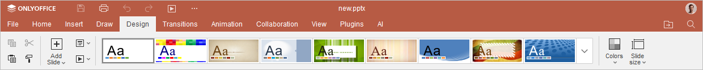
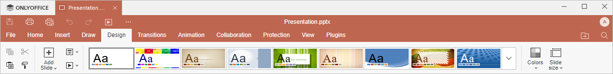

Kartica Dizajn
Kartica Dizajn u Presentation Editor-u omogućava prilagođavanje prezentacije, odnosno njenih boja, dizajna slajdova itd.
Odgovarajući prozor Online Presentation Editor-a:

Odgovarajući prozor Desktop Presentation Editor-a:

Korišćenjem ove kartice možete:
- promeniti temu, šemu boja ili veličinu slajda.